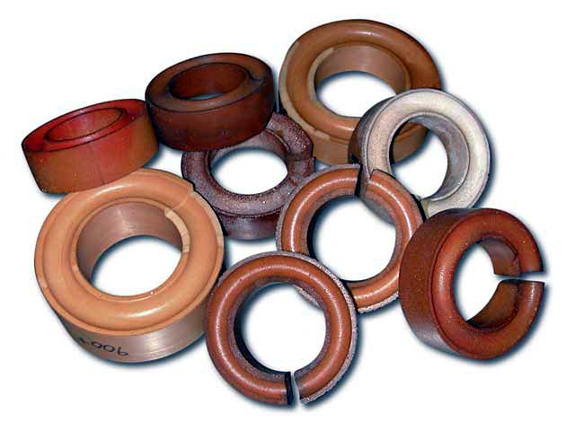
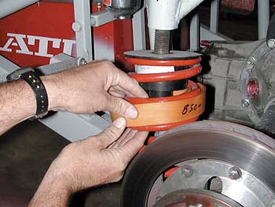
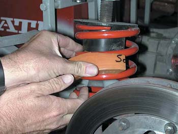
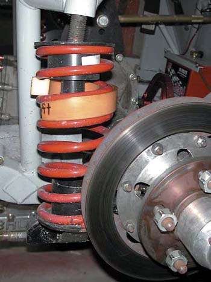

|
Spring Rubbers |
|
 TrackBeast from NLOC runs the stock front springs, but adds NASCAR-type spring rubbers when he goes road racing. |
|
This great article from
Stock Car Racing magazine
describes spring rubbers better than I can:
You may have heard a crew chief or reporter mention during a NASCAR broadcast that a team was going to add a spring rubber to the right front or left rear to tighten up the car on its next pit stop. But what does that really mean? How much of an effect can a piece of rubber have on the handling of a race car? And what exactly is a spring rubber? Stock Car Racing magazine went to Robbie Loomis, crew chief of the No. 24 Dupont Chevrolet one of the top crew chiefs in the Winston Cup garage, for an explanation of how and why he uses spring rubbers to make Jeff Gordon�s car handle so well. |
|
 �A lot of times you�ll see people run them because you want to have the car be able to get down on the straightaway. It�ll be soft or won�t be as hard on rubber, yet, when it travels in the corner and gets maximum travel, then it�ll start getting hard on the rubber and pick up the spring rate.� What a spring rubber actually does is connect the coils to coils in the springs, which drives the spring rate up and makes it stiffer. Spring rubbers come in 2 1/4� to the larger 5� version. They also come in full, half and quarter pieces for very specific adjustments. |
|
 Crew chiefs, in consultation with the driver, make the call as to where and what size spring rubber to install on a pit stop. The decision is based on whether the car is tight (meaning, when going through a turn, the driver will crank the steering wheel to the left, but the car won�t turn and wants to head off into the wall) or loose (when going through a turn, the driver cranks the steering wheel to the left and the rear end of the car feels like it wants to come on around). |
|
�Typically you�ll see people put them in the right front of a car to tighten the car up, cause it�ll add spring rate to that corner. You will also see people want to put them in the left front to make the car want to turn better, cause it will add spring rate just to the left side of the car.�  Often times it�s actually quicker to add a spring rubber to the left or right rear during a 15-second pit stop. It is common practice to begin a race with spring rubbers already in the rear. �They�ll add (spring) rate pretty quick to a spring because you can figure your talking about a 300-350 pound spring by the time you put a rubber in it. If we want to loosen the car up, we�ll put one in the right rear, which will gain the (spring) rate over there. If we�re trying to tighten the car up, we�ll put more spring rate in the left rear.� Spring rubbers are made in soft, medium and hard compounds. Some rubbers are harder, which increase the spring rate more than a softer compound. �You might put one in a spring and it add 25 pounds to the spring rate and then you put another one in and add 50 pounds to the spring rate. There is a variance in the different hardness of rubbers that you can get that will really affect the rate of spring. Naturally the full rubber is going to give you a lot more rate between the coils than putting a half in.� A spring rubber is just one of the seemingly small adjustments that can mean the difference between winning and losing in the intensely competitive world of NASCAR Winston Cup racing. From Longacre Racing: Chassis gurus often choose to go with the softer spring that is enhanced by a stiff spring rubber, taking the combination beyond the next manufactured rate, thus building in varying rate of adjustability into the car. You can test the effect of different spring rubber rates which will increase your knowledge base. Experience will give you an idea of ride height changes created by the installation or removal of spring rubbers which varies with the rate of the rubber installed. Longacre's selection of spring rubbers is listed here . TrackBeast reported the following: With the spindles and stock springs and stock isolators, I ended up with a solid 2.5" drop. Belltech swears that it is no more than 2" and I believe that someone on this board got 2". So I'm sitting at 16.5" which is fine. My new approach is to go soft on the springs and stiff on everything else, which also makes for a nice street ride also. So I went with poly everything and built custom end links that can be really tightened down and my sway bar bushings have no slits and are drilled tighter than what would come with the bars. Not sure how much difference that makes but I like it tight. I'm running the Hotchkis front bar with the Hellwig rear with high density poly bushings (not the soft ones supplied) and upgraded hardware. When I started investigating the spring rubbers, I opted to stay on the conservative side in terms of hardness due to the added stress it puts on the springs themselves outside where they are supported. My intentions was to first test with one on each spring and then add a second one. The ride height increase with one rubber is 1/4" or less and the results are very positive. Next, I will add a second one and keep playing with my shock setting. My non-scientific calculations with 2 rubbers should take the spring rate from 665 to about 850lbs. (total # of coils and remove 2 with consideration to a certain amount of give depending on the hardness of the rubbers). With everything else being so stiff including the shocks, it is still necessary to be able to transfer weight otherwise you end up with a drift vehicle. The spring rubbers that I am using are sold by BSR # MRG 1287 and are described as rear rubbers because they are grooved on both sides. The distance between the bottom of the grooves is 7/8". With these rubbers you are basically taking out 1 loop for each rubber and the rest of the spring will compensate somewhat. I haven't tried this but I am hoping that the increase in ride height will be no more than 1/2" with both on (low density rubber). Hard poly will be less compliant and will result in increased ride height. If anyone uses other types, I would be very interested to hear your impressions but I am very pleased with the results so far. With all my other changes, I have built a great all around suspension with excellent adaptability and few compromises. Hope this helps. TB
|